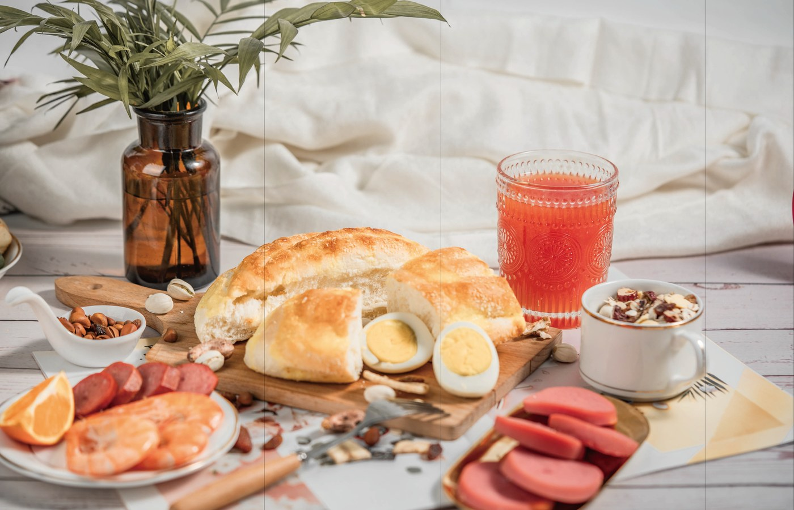
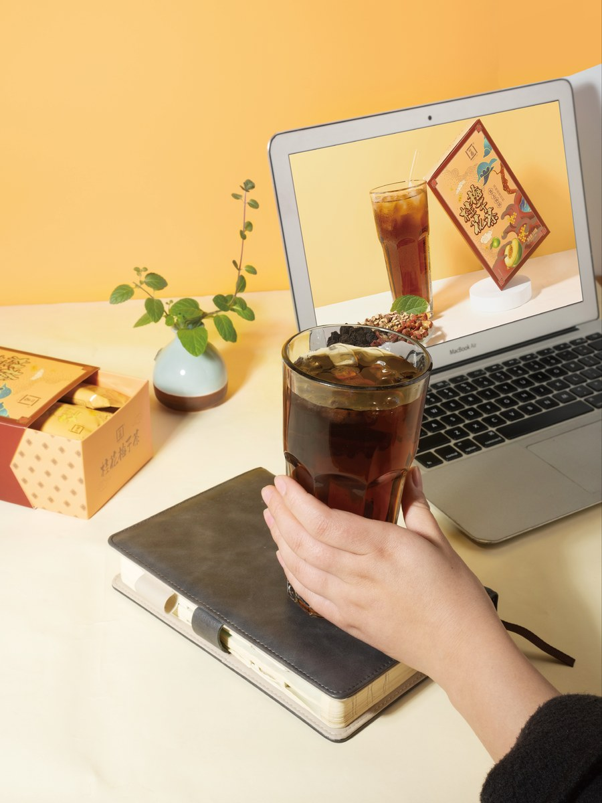
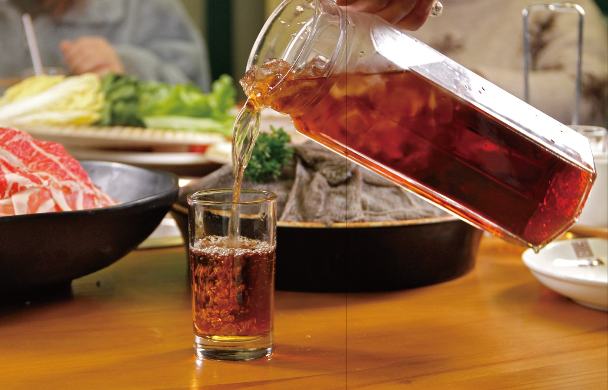
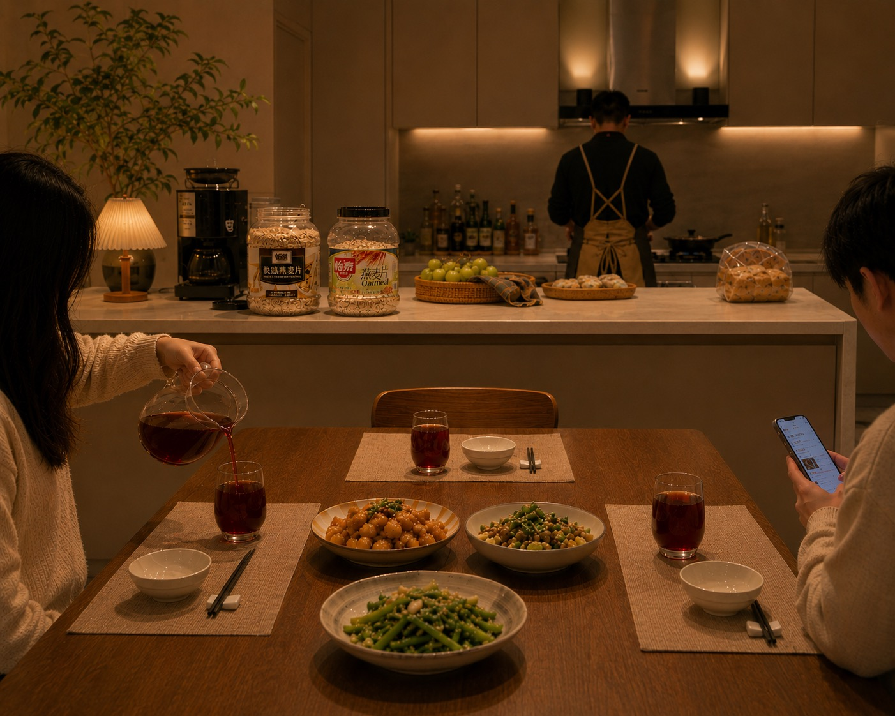
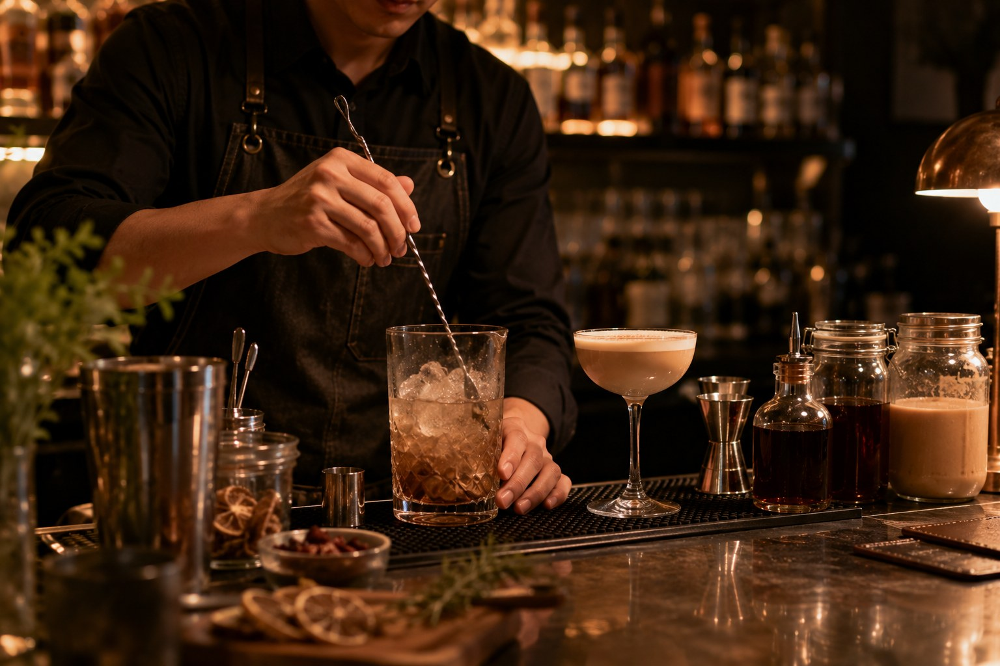
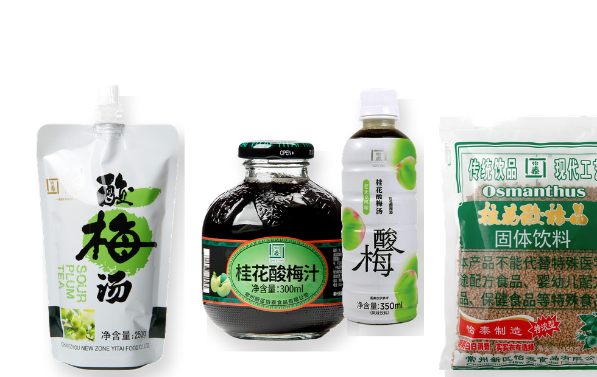
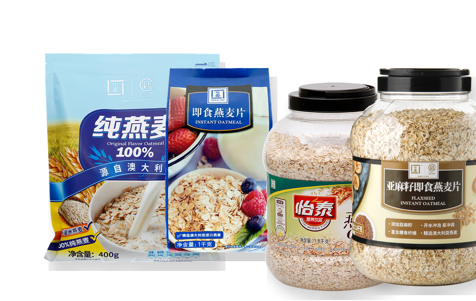

01 早餐营养
燕麦、牛奶、谷物，进入每天早晨的家庭餐桌。

燕麦、牛奶、谷物，进入每天早晨的家庭餐桌。

热水冲泡酸梅晶与果味饮品，适配办公室与家庭节奏。

面向火锅店、饮品店和后厨调饮的稳定应用。

从一杯酸梅汤到一份燕麦早餐，回到真实家庭场景。

酸梅汤、奶茶与植物浓缩饮品，可延展为茶饮、特调饮品与调酒基底。
Product Architecture
面向未来十年的长期消费需求，怡泰食品聚焦植物饮品与燕麦营养食品两条主线，构建稳定、清晰、可持续的产品布局。
Plant-Based Beverage Series
怡泰植物饮品系列立足植物原料与传统饮品风味，产品形态涵盖固体冲饮、浓缩饮品与即饮饮品， 适用于家庭日常饮用、餐饮配套及商用渠道供应。

Oat Nutrition Series
怡泰燕麦营养食品系列以日常早餐和家庭营养需求为基础，涵盖纯燕麦与复合燕麦产品， 方便冲泡搭配，适合长期食用。
查看燕麦营养分类

Who We Are
怡泰食品不是单一酸梅汤企业，也不是单一麦片企业。我们长期专注于植物饮品与燕麦营养食品两个方向，并在消费者熟悉的产品小类中持续深耕。
围绕固体冲饮、浓缩饮品、即饮饮品、纯燕麦和复合燕麦等产品类别，怡泰不断积累原料筛选、配方开发、生产工艺、规格适配和品质管理能力。产品既面向家庭日常饮用与早餐营养，也服务餐饮配套、商用饮品开发和渠道稳定供应，努力把常见食品做得更稳定、更可靠、更适合长期消费。